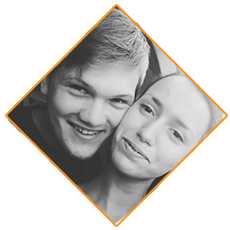

Team
-

Jaka Krajnc
Na projektu sem največ časa posvetil načtrovanju podatkovne baze ter izdelave zalednega sistema. Želim pridobiti čim večje zadovoljstvo uporabnikov ter čim višjo uspešnost na trgu. Želim si tudi, da bo spletna stran postala nekaj vsakdanjega vsakega študenta ali dijaka pred novim študijskim letom ali izpitom.
-

Nejc Rebernik
Kot glavni motivator za skupino sem se trudil, da bo skupina v času izpeljala nalogo. Sam sem pomagal pri izdelavi podatkovne baze ter pri dostopanju do podatkov s spletne strani. Predvsem pa upam, da bodo študentje in dijaki zadovoljni z uporabo naše spletne strani.
-

Janez Sajovic
Kot član ekipe sem poskrbel za dokumentacijo. Izoblikoval sem tudi okni za prijavo in registracijo na spletni strani, da se postopek prijave pravilno preverja. Izdelal sem tudi kdo opise celotne ekipe spletne strani. Upam, da nam bo uspelo in da bomo uporabnike v največji meri navdušili z našim izdelkom.
> -

Matija Volontar
Moja naloga je bila, da pripravim spletno stran za uporabo. Poskrbel sem za privlačen izgled in umetniški pridih spletne strani. Predvsem upam, da nas bodo na trgu sprejeli, kar se da najbolje in da bomo dobili dovolj dobro ponudbu bodočih investitorjev.